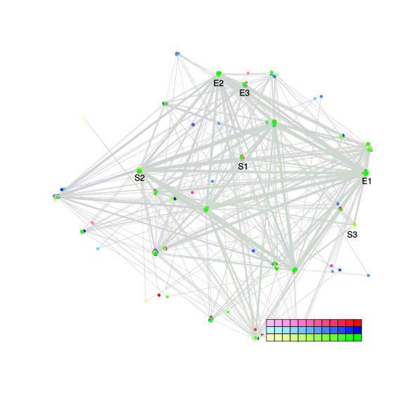
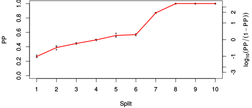
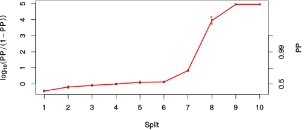

| chain # | burnin | subsample | Iterations (remaining) | command line | subdirectory | directory |
|---|---|---|---|---|---|---|
| 1 | 10000 | 1 | 90000 | /usr/local/bali-phy-3.0-beta2/bin/bali-phy cat_E6_E7_AA_red3_Alpha_all4Manatees.fas -s 26374 -n cat_E6_E7_red3_Alpha_all4Manatees_c1 | cat_E6_E7_red3_Alpha_all4Manatees_c1-1 | /home/willemse/data/trees/BaliPhy/cat_E6_E7 |
| 2 | 10000 | 1 | 90000 | /usr/local/bali-phy-3.0-beta2/bin/bali-phy cat_E6_E7_AA_red3_Alpha_all4Manatees.fas -s 54613 -n cat_E6_E7_red3_Alpha_all4Manatees_c2 | cat_E6_E7_red3_Alpha_all4Manatees_c2-1 | /home/willemse/data/trees/BaliPhy/cat_E6_E7 |
| 3 | 10000 | 1 | 90000 | /usr/local/bali-phy-3.0-beta2/bin/bali-phy cat_E6_E7_AA_red3_Alpha_all4Manatees.fas -s 23482 -n cat_E6_E7_red3_Alpha_all4Manatees_c3 | cat_E6_E7_red3_Alpha_all4Manatees_c3-1 | /home/willemse/data/trees/BaliPhy/cat_E6_E7 |
| P(data|M) = -5456.412 +- 0.282 | Complete sample: 302 topologies | 95% Bayesian credible interval: 41 topologies |
Phylogeny Distribution

| Partition support: Summary |
| Partition support graph: SVG |
{kind=link}
| 50% consensus | Newick (+PP) | SVG | |||||
| 66% consensus | Newick (+PP) | SVG | |||||
| 80% consensus | Newick (+PP) | SVG | |||||
| 90% consensus | Newick (+PP) | SVG | |||||
| 95% consensus | Newick (+PP) | SVG | |||||
| 99% consensus | Newick (+PP) | SVG | |||||
| 100% consensus | Newick (+PP) | SVG | |||||
| MAP | Newick (+PP) | SVG | |||||
| greedy | Newick (+PP) | SVG |
{kind=link}
{kind=link}
{kind=link}
{kind=link}
{kind=link}
{kind=link}
{kind=link}
{kind=link}
Alignment Distribution
Partition 1
| Diff | Min. %identity | # Sites | Constant | Informative | ||||
|---|---|---|---|---|---|---|---|---|
| Initial | FASTA | HTML | Diff | 2.21% | 272 | 1 (0.368%) | 222 (81.6%) | |
| Best (WPD) | FASTA | HTML | AU | 8.46% | 476 | 14 (2.94%) | 204 (42.9%) |
Mixing
{kind=link}
{kind=link}
| burnin (scalar) | ESS (scalar) | ESS (partition) | ASDSF | MSDSF | PSRF-CI80% | PSRF-RCF |
|---|---|---|---|---|---|---|
| 2043 | 596.6 | 1162.873 | 0.010 | 0.028 | 1.001 | 1.011 |
Projection of RF distances for the first 3 chains3D | Variation of split PPs across chains |
Scalar variables
| Statistic | Median | 95% BCI | ACT | ESS | burnin | PSRF-CI80% | PSRF-RCF |
|---|---|---|---|---|---|---|---|
| prior | -376 | (-418, -338.3) | 51.21 | 5272 | 1859 | 1 | 0.9949 |
| prior_A1 | -369.2 | (-409.9, -333.9) | 25.24 | 10697 | 1868 | 1 | 0.9986 |
| likelihood | -5435 | (-5457, -5412) | 57.11 | 4727 | 313 | 1.001 | 0.9984 |
| logp | -5811 | (-5848, -5778) | 59.91 | 4507 | 913 | 1 | 0.9964 |
| Heat.beta | 1 | ||||||
| Scale1 | 5.707 | (3.093, 9.283) | 1 | 270003 | 141 | 1 | 1 |
| S1.F.pi.A | 0.05411 | (0.04316, 0.06562) | 7.865 | 34327 | 189 | 0.9997 | 1.002 |
| S1.F.pi.R | 0.07754 | (0.06396, 0.09202) | 8.611 | 31357 | 244 | 1 | 0.9979 |
| S1.F.pi.N | 0.03125 | (0.02346, 0.03953) | 7.879 | 34266 | 243 | 0.9998 | 0.9971 |
| S1.F.pi.D | 0.05944 | (0.04745, 0.07229) | 7.968 | 33885 | 354 | 0.9999 | 1.002 |
| S1.F.pi.C | 0.04733 | (0.03484, 0.0607) | 8.099 | 33336 | 419 | 1 | 1 |
| S1.F.pi.Q | 0.04659 | (0.03727, 0.0566) | 8.558 | 31549 | 617 | 0.9996 | 1.001 |
| S1.F.pi.E | 0.06953 | (0.0571, 0.08225) | 8.651 | 31210 | 142 | 0.9998 | 0.9945 |
| S1.F.pi.G | 0.05662 | (0.04301, 0.07122) | 8.226 | 32822 | 303 | 1 | 0.9992 |
| S1.F.pi.H | 0.03474 | (0.02578, 0.04422) | 8.106 | 33308 | 222 | 0.9993 | 1.003 |
| S1.F.pi.I | 0.04985 | (0.03984, 0.06036) | 7.911 | 34131 | 313 | 1 | 0.9969 |
| S1.F.pi.L | 0.09836 | (0.08224, 0.1154) | 8.054 | 33525 | 346 | 1 | 0.9956 |
| S1.F.pi.K | 0.03879 | (0.02988, 0.04834) | 8.513 | 31716 | 149 | 1 | 1.011 |
| S1.F.pi.M | 0.01031 | (0.006026, 0.01513) | 8.198 | 32934 | 352 | 0.9996 | 1.008 |
| S1.F.pi.F | 0.0391 | (0.02899, 0.04969) | 7.85 | 34394 | 189 | 1 | 0.9981 |
| S1.F.pi.P | 0.03518 | (0.02487, 0.046) | 9.136 | 29554 | 125 | 1.001 | 1.003 |
| S1.F.pi.S | 0.05587 | (0.04533, 0.06698) | 8.71 | 30999 | 403 | 1 | 1.003 |
| S1.F.pi.T | 0.0643 | (0.05244, 0.07715) | 7.778 | 34714 | 642 | 1 | 0.9956 |
| S1.F.pi.W | 0.02172 | (0.01412, 0.03049) | 7.842 | 34431 | 168 | 0.9996 | 1.005 |
| S1.F.pi.Y | 0.05104 | (0.03995, 0.06309) | 7.95 | 33961 | 341 | 1 | 1.005 |
| S1.F.pi.V | 0.05421 | (0.0431, 0.06599) | 8.237 | 32778 | 540 | 1 | 0.9955 |
| I1.RS07.meanIndelLengthMinus1 | 9.346 | (6.351, 12.96) | 9.385 | 28769 | 252 | 1 | 1.002 |
| I1.RS07.logLambda | -4.288 | (-4.662, -3.942) | 2.872 | 93996 | 131 | 1 | 1.001 |
| |A1| | 436 | (410, 464) | 452.6 | 596 | 1461 | 0.9722 | 0.9981 |
| #indels1 | 41 | (36, 46) | 19.04 | 14178 | 565 | 0.9545 | 0.9988 |
| |indels1| | 410 | (364, 468) | 93.96 | 2873 | 2043 | 0.9779 | 0.9997 |
| #substs1 | 986 | (961, 1005) | 414.7 | 651 | 1857 | 0.9767 | 0.9997 |
| Scale1*|T| | 7.161 | (6.613, 7.729) | 2.926 | 92292 | 142 | 1 | 1 |
| |A| | 436 | (410, 464) | 452.6 | 596 | 1461 | 0.9722 | 0.9981 |
| #indels | 41 | (36, 46) | 19.04 | 14178 | 565 | 0.9545 | 0.9988 |
| |indels| | 410 | (364, 468) | 93.96 | 2873 | 2043 | 0.9779 | 0.9997 |
| #substs | 986 | (961, 1005) | 414.7 | 651 | 1857 | 0.9767 | 0.9997 |
| |T| | 1.255 | (0.6631, 1.983) | 1 | 270003 | 96 | 0.9998 | 0.999 |